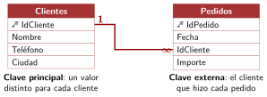

Qué es una base de datos relacional
Criterios: 5a
🤔 Pienso10 min
Qué hago aquí: Piensa un momento y contesta con lo que ya sabes. No pasa nada si no lo sabes: es para empezar.
Escribe los datos que tu centro tiene de ti. ¿Cuáles tienen también de tus profesores? ¿Cuáles se repetirían si se guardaran en cada asignatura?
📖 Leo y aprendo40 min
Qué hago aquí: Lee despacio, mira los dibujos y los ejemplos, y quédate con la idea clave del final.
Una base de datos es un conjunto organizado de datos sobre un mismo tema: clientes, productos, pedidos, alumnos. Los datos se guardan en tablas:
| IdCliente | Nombre | Teléfono | Ciudad |
|---|---|---|---|
| 1 | Ana López | 942 111 222 | Astillero |
| 2 | Luis Pérez | 942 333 444 | Santander |
| 3 | Eva Ruiz | 942 555 666 | Maliaño |
Columna: un campo Fila: un registro
En una base de datos relacional, las tablas se unen por un campo común. Así cada dato se escribe una sola vez: los datos del cliente están en Clientes, y cada pedido solo guarda su IdCliente.

Access (Microsoft 365) guarda todo en un único archivo .accdb con cuatro objetos principales:
guardan los datos
preguntan a los datos
para introducir datos
para imprimir
✏️ Hago90 min
Qué hago aquí: Haz las actividades en orden. Empieza siempre por las básicas.
En la tabla de clientes de arriba, ¿cuántos campos y cuántos registros hay? ¿Cuál es la clave principal?
Elige la mejor clave principal para cada tabla: a) alumnos; b) productos; c) facturas; d) empleados.
Diseña en papel las tablas de una biblioteca: Libros, Socios y Préstamos. Escribe los campos de cada una, marca la clave principal y dibuja las relaciones.
¿Qué ventajas tiene una base de datos frente a una hoja de Excel cuando hay muchos datos y varias personas trabajando con ellos?
¿Qué tipo de relación hay entre: a) un cliente y sus pedidos; b) una persona y su DNI; c) alumnos y asignaturas?
🚀 Amplío (si quieres saber más)
Qué hago aquí: ¿Has terminado? Lee la curiosidad o elige el reto. Es voluntario.
Investiga qué significa que una base de datos esté normalizada. ¿Qué problema evita?
✅ Compruebo10 min
Qué hago aquí: Contesta sin mirar la ficha y marca cómo lo llevas.